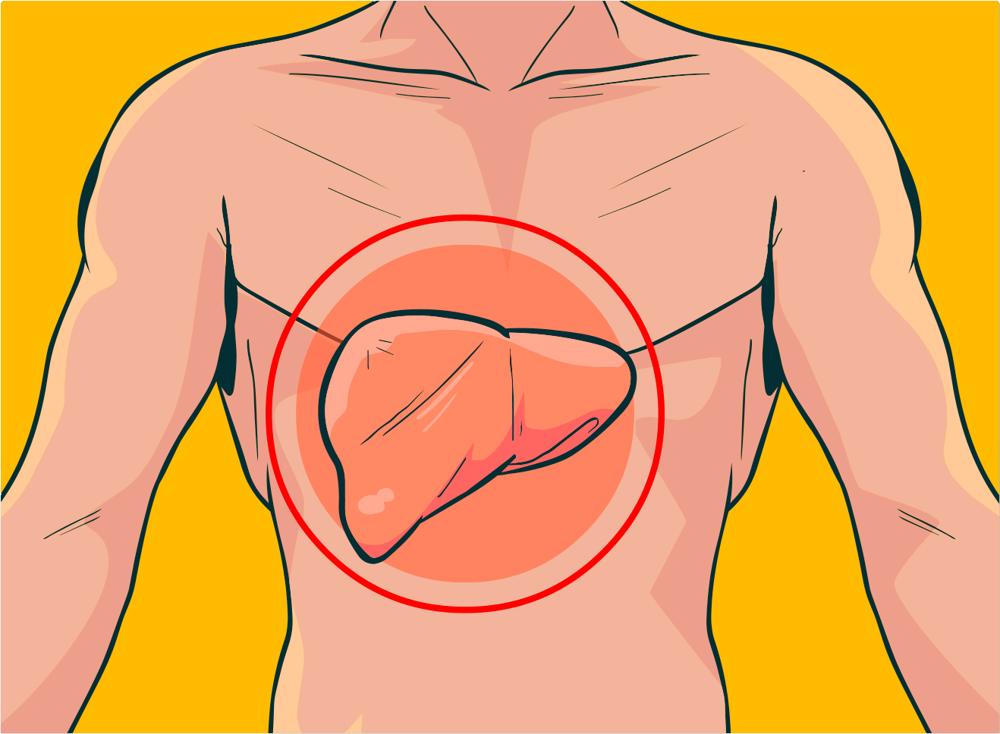

Agora, vejamos os mesmos aspectos referentes à hepatite C. Clique nas abas para conhecê-los.
As manifestações clínicas da hepatite C são bastante inespecíficas, qHuaendpoasetiatperesevntiarma, iesincluem, mas não se limitam a anorexia, fraqueza, mal-estar e dor abdominal. UmCalimquennoor ípcaonrteddooásupdaiocpieanrateessacuptraersaenretaspeito das hepatites virais e suas formas de transmissão. icterícia (amarelado da pele e olhos) ou escurecimento da urina.
Estima-se que, em torno de 80% de pessoas infectadas pelo HCV, não apresentem nenhum tipo de manifestação clínica.
O diagnóstico pode ser feito por meio de testes sorológicos, testes rápidos ou testes biomoleculares baseados na detecção do DNA viral.
A testagem espontânea oportuna para HCV é uma eito das hepatites virais e suas formas de transmissão. estratégia de saúde pública de extrema importância para o controle da hepatite C nas populações prioritárias: pessoas vivendo com HIV; pessoas sexualmente ativas prestes a iniciar profilaxia pré-exposição (PrEP) ao HIV (a indicação de testagem seguirá o protocolo de PrEP); pessoas com múltiplos parceiros sexuais ou com múltiplas infecções sexualmente transmissíveis; pessoas trans; trabalhadores(as) do sexo; pessoas em situação de rua; pessoas privadas de liberdade.
É feito com os chamados antivirais de ação direta (DAA), que apresentam taxas de cura de mais 95% e são realizados,Cgleiqruaelmnoeníctoen, peodro8áuoduio12psaerma easncausta. Or asrespeito das hepatites virais e suas formas de transmissão. DAA revolucionaram o tratamento da hepatite C, possibilitando a eliminação da infecção.
As atuais medicações para o tratamento da hepatite C, com registro no Brasil e incorporadas ao SUS, apresentam alta efetividade terapêutica.
As formas de prevenção da hepatite C são similares às de outras ISTs. Vale ressaltar que não existe vacinação contra a hepatite C e que, sempre que for pertinente, deve-se orientar a não se compartilhar quaisquer materiais perfurocortantes.